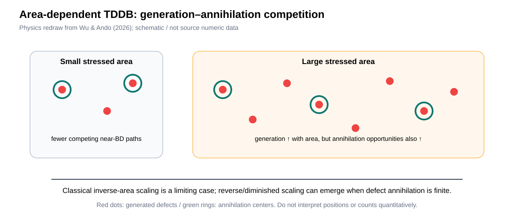
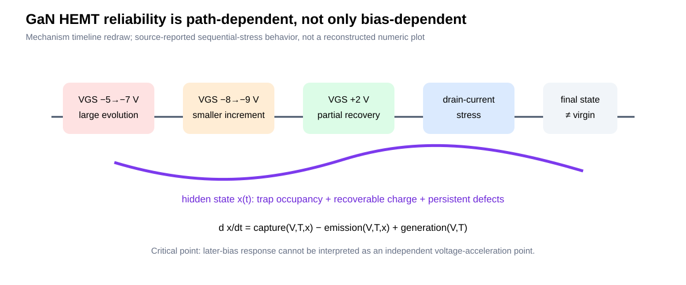
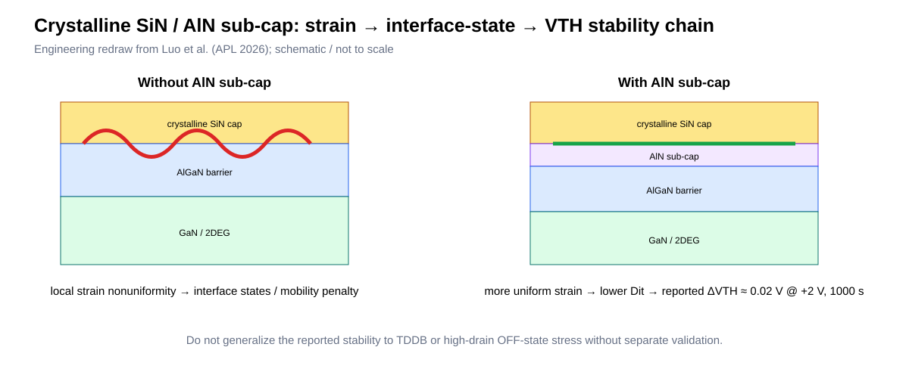
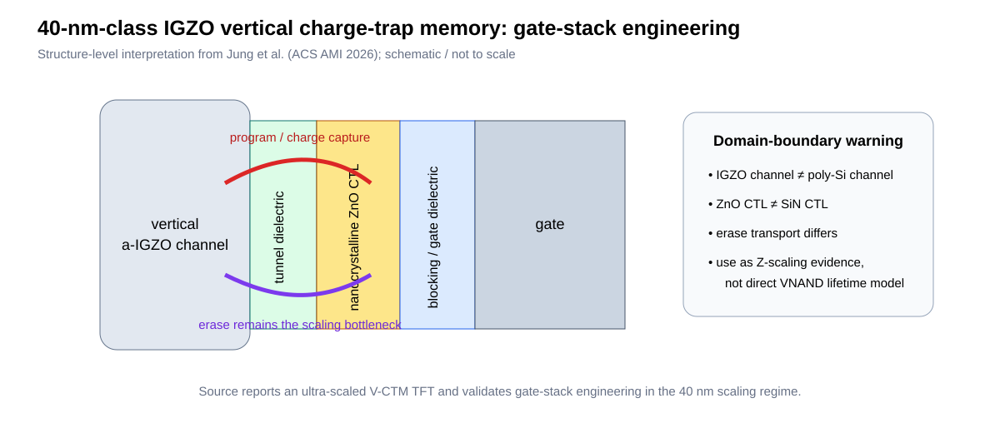
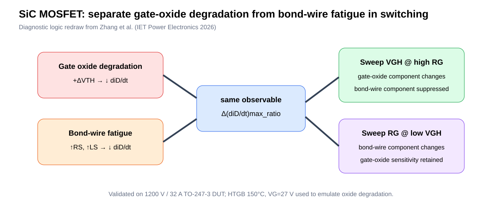

Executive Summary
W39에서 가장 중요한 변화는 stress amplitude만 맞추면 lifetime physics도 맞는다는 가정이 더 약해졌다는 것입니다. 9월 14일 발표된 TDDB 연구는 전통적인 inverse-area scaling을 defect-generation only의 필연적 결과가 아니라 generation–annihilation competition의 특수한 한계로 재해석합니다. 9월 10일 GaN 연구는 sequential stress에서 이전 bias가 만든 trap state가 이후 stress response를 바꾸므로, voltage acceleration curve 자체가 stress order에 의존할 수 있음을 실험적으로 보여줍니다.
| # | Paper / date | What changed | Engineering consequence |
|---|---|---|---|
| 1 | Wu & Ando, Front. Nanotechnol., 2026-09-14 | TDDB area scaling에 defect annihilation을 명시적으로 포함 | area conversion과 Weibull tail을 자동 weakest-link로 처리하면 위험 |
| 2 | GaN sequential stress, Energies, 2026-09-10 | later stress response가 prior electrical state에 의존 | randomized-order / fresh-population control 필요 |
| 3 | Luo et al., APL, 2026-09-09 | AlN sub-cap이 local strain/interface state를 완화 | mechanical/interface state를 VTH-stability knob로 취급 |
| 4 | Jung et al., ACS AMI, online 2026-08-21 / issue 2026-09-02 | 40-nm scaling regime에서 IGZO vertical CTM gate-stack engineering 검증 | poly-Si→oxide-semiconductor 전환의 erase/domain boundary를 분리 평가 |
| 5 | Zhang et al., IET Power Electronics, 2026-07-23 | diD/dt 하나에서 oxide vs bond-wire degradation을 drive sweep으로 분리 | in-situ precursor를 mechanism-selective하게 만들 수 있음 |
1. TDDB area scaling is not necessarily a one-way weakest-link law

Causal chain. Field/injection creates precursor defects → many near-breakdown paths compete → some defects are annihilated/recombined before a percolation path survives → annihilation-center population itself decays with time → the effective survivor statistics become a joint minimum/maximum-value problem → apparent area scaling can weaken or reverse.
Dominant parameters. stressed area A, β, defect-generation rate, annihilation time distribution, H/O-related defect chemistry, first-SBD versus HBD criterion. The source connects estimated annihilation times with hydrogen substitution into oxygen vacancies over roughly ns-to-s timescales; this is material-specific evidence, not a universal oxide constant.
2. GaN reliability has memory: prior electrical state changes later stress response

이 식의 핵심은 capture/emission rate가 현재 V,T뿐 아니라 이미 채워진 trap state x에도 의존한다는 것입니다. 따라서 동일한 −8 V라도 virgin device와 −5→−7 V를 이미 거친 device의 ΔVTH(t)는 같을 필요가 없습니다.
3. Local strain mitigation becomes an interface-reliability knob in GaN

Competing mechanisms. Improved VTH stability can arise from lower interface-state density, modified polarization/2DEG electrostatics, or altered injection barrier. Mobility/RON improvement supports an interface-quality contribution, but this does not by itself prove improved TDDB.
4. IGZO vertical charge-trap memory: useful Z-scaling evidence, but not a drop-in VNAND model

VNAND translation. The valuable insight is not a direct retention lifetime number. It is that channel-material replacement can relieve one scaling constraint while moving the bottleneck into erase injection/barrier engineering. For poly-Si VNAND, the analogous question is whether a process split that improves channel conduction or Z-pitch silently changes tunnel/CTL charge injection and therefore retention/interference.
5. SiC: a single online observable can be made mechanism-selective by controlled drive perturbation

핵심은 precursor 하나가 두 failure mode에 민감하더라도, controlled perturbation에 대한 Jacobian이 다르면 mechanism을 분리할 수 있다는 것입니다. 이는 VNAND에서도 leakage, VTH, read-current 하나만 보지 말고 bias/read-condition perturbation을 통해 precursor의 mechanism selectivity를 높이는 설계로 확장할 수 있습니다.
Claim–Evidence Model Cards
| Item | Claim / Evidence | Valid range | Contradiction / boundary | Confidence |
|---|---|---|---|---|
| TDDB area | generation+annihilation explains non-classical area scaling; H-doped HfO2 data/model | HfO2/high-k; source-specific BD criteria | SiO2/SiN/BEOL transfer unverified | High for source; Medium-Low transfer |
| GaN history | prior stress state changes later ΔVTH/RDS/IGS response | 3 nominally identical depletion-mode GaN-on-SiC; sequential protocol | no independent population voltage-acceleration proof | High qualitative |
| GaN strain | AlN sub-cap reduces local strain/interface-state effects | reported cap/barrier stack; +2 V 1000 s, 25/150°C thermal test | TDDB/HCI not established | High within test |
| IGZO V-CTM | gate-stack engineering enables 40-nm-class vertical CTM scaling | a-IGZO channel, ZnO CTL | poly-Si/SiN VNAND physics differs | High source / Low direct transfer |
| SiC diagnosis | VGH/RG sweeps separate oxide and wire contributions to diD/dt | 1200 V 32 A TO-247-3; emulated modes | additional package modes may break orthogonality | High for 2-mode experiment |
Cross-Paper Contradiction Matrix
| Question | Prior simplification | W39 evidence | Updated position |
|---|---|---|---|
| Can stress be represented by one scalar? | E, V, T or HIGH-time | GaN history + W38 rise-time/Qinj | No: include waveform/history/state when signatures demand it |
| Does larger area always shorten TDDB by weakest-link scaling? | η∝A−1/β | generation–annihilation model permits diminished/reverse scaling | Verify area-collapse before conversion |
| Does improved ΔVTH stability imply improved dielectric lifetime? | often treated as correlated | GaN strain study is interface/VTH evidence, not TDDB | Keep BTI/trap stability and TDDB gates separate |
| Can one precursor identify one failure mode? | one metric → one mechanism | SiC diD/dt responds to both oxide and bond wire | Use controlled perturbation to obtain mechanism-selective response |
What changed our understanding?
- TDDB area conversion itself becomes a physics check. β와 면적만으로 자동 변환하기 전에 generation/annihilation competition이 없는지 확인해야 합니다.
- Acceleration experiments need state-reset logic. Sequential bias sweep는 독립 voltage points가 아니라 history-dependent trajectory일 수 있습니다.
- Mechanical/interface engineering can change electrical reliability without changing nominal bias. W37 CTN residual stress와 W39 GaN cap-strain 결과가 같은 방향의 cross-material evidence를 만듭니다.
- Precursor specificity can be engineered. observable 자체보다 controlled perturbation에 대한 sensitivity vector가 failure-mode 분리에 더 강력할 수 있습니다.
New testable hypotheses — Engineering Inference
H1. VNAND WL-to-WL/BEOL TDDB에서 area-normalized Weibull CDF가 stress time 또는 area에 따라 collapse하지 않는 split은 단순 extrinsic mixture뿐 아니라 defect annihilation/recovery state를 포함할 수 있다. Falsification: area·time across splits가 single β/η scaling으로 완전히 collapse하고 precursor recovery가 없으면 H1은 기각.
H2. VNAND GIDL/erase 또는 HV stress의 stepped-bias qualification에서 이전 stress가 만든 trap occupancy가 다음 step의 apparent acceleration factor를 왜곡할 수 있다. Falsification: fresh-population parallel stress와 reversed-order stress가 동일 kinetics/η/β를 주면 history effect는 무시 가능.
H3. 한 개의 read-current/leakage precursor도 두 개 이상의 read-bias 또는 pulse-edge perturbation을 주면 trap/reversible-charge와 permanent damage를 분리할 수 있다. Falsification: perturbation Jacobian이 두 failure modes에서 collinear하면 분리 불가.
Priority DOE — State-aware acceleration validation
| Axis | Split | Measure | Discriminating signature |
|---|---|---|---|
| Stress history | fresh parallel / low→high / high→low | ΔVTH, leakage, recovery, tBD | order dependence = hidden state |
| Area | ≥3 areas, matched E/T | β, η, CDF curvature | non-collapse after A scaling = non-classical statistics/population |
| Waveform | DC / AC, matched HIGH-time, varied rise time | Qinj, leakage precursor, tBD | edge/Qinj term vs pure high-time |
| Recovery | μs→hours | VTH/SS/gm/leakage | reversible occupancy vs persistent damage |
추천 1순위: 기존 AC/DC TDDB 데이터에 stress-order + area + recovery 축을 추가해, 'same HIGH time' 가정과 'classical area scaling' 가정을 동시에 검증하십시오. 두 가정이 모두 유지되는 영역에서만 user-condition extrapolation을 허용하는 것이 안전합니다.
Updated Mechanism Knowledge Map
TDDB — area scaling에 generation–annihilation boundary 추가. HCI/BTI — sequential stress/history-state boundary 추가. HV SOA — interface/strain과 online precursor separability 연결. CTL/Retention — oxide-semiconductor vertical CTM을 material-domain boundary 사례로 추가.
Technical & Figure QC Summary
PASS
PASS
PASS
NONE
5 source-grounded redraws
0 before publication gate
References
1. Wu EY, Ando T. Front. Nanotechnol. 8 (2026). DOI
2. Trap Dynamics and Long-Term Reliability in Depletion-Mode GaN HEMTs Under Sequential Electrical Stress. Energies 19(18), 4286. DOI
3. Luo X. et al. Appl. Phys. Lett. 129, 102103 (2026). DOI
4. Jung Y-J. et al. ACS Appl. Mater. Interfaces 18, 46470–46482 (2026). DOI
5. Zhang H. et al. IET Power Electronics 19(1), e70286 (2026). DOI